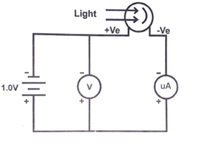
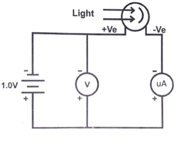

Apparatus
Overall Circuit

Circuitboard

Light Source

Photocell

Cable Wires

Connect the Circuit as shown
 

Light source is arranged and light is allowed to fall on the tube which is enclosed in a box the distance between photo cell and Light source adjusted for the flow of current. Apply the Colour filters of known wave length λ1,λ2 and etc., is placed in path of light.
A reading is observed in Micro ammeter. This reading corresponds to zero anode potential with that particular filter.

A small negative potential is applied is gradually increase in step and each time reading in voltmeter and ammeter is noted till the micro ammeter reading comes to zero. This is stopping potential V1 corresponding to filter with wave length λ1.

The experiment is repeated another filter of known wave length and corresponding stopping potential and are noted.
A graph is plotted by taking negative anode stopping potential (K) Kinetic Energy on X-Axis Vs Frequency of particular filter on Y-Axis.

Standard values of e, c and wavelength of standard filters are given below:
e = 1.6x 10-19 Coulomb
c = 3x 10 -8 m/s.
Wave length :
Red filter 640 nm
Orange filter 570 nm
Green filter 500 nm
Blue filter 450 nm
Frequency ν = c/λ
= 3 x 108/640 x 10-9 = 4.687x1014 Hz